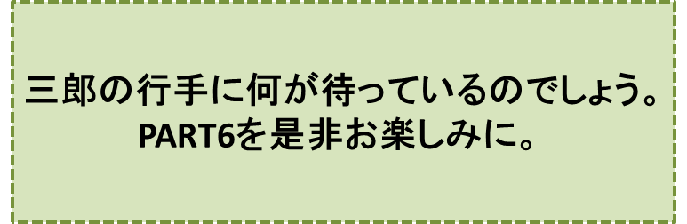

三郎と幸福のホテル-PART5-
『マンシャーニ』の巻
笠原正雄
三郎が人の気配に気づいて、ふと我に帰った時、老人は彼の傍に歩み寄って静かに口を開きました。
「最初に会った女性を嫌な奴と思って、断ってしまったね……」
三郎は驚きの余り息が詰まりそうでした。シオニー村の麦畑で出会った老人が、にこにこ優しい笑みを浮かべながら目の前に立っているからです。
「後二回の機会を失わないようにするがよい。その機会を掴めば、素晴らしく幸せな人間になれるのだから……」
老人はこう言ったかと思うと、もう部屋の中には見えませんでした。辺りに誰も居なくなったのを見て、三郎はぼんやり呟(つぶや)きます。
「あぁ、そうだったのか。あれ程固く決心しておきながら、うっかり第一回目の機会を失ってしまったのだ」
彼は呆然として立ち尽くしたままでした。
どのくらい時間が経ったでしょう。三郎は突然愉快でたまらないというように大声で笑い出し、床の上で眩しく輝いている大小様々な大きさの黄金の破片を指さしました。
“面白い！ “つまらぬ奴”は幸福をたっぷり置き忘れて行ったぞ。見ろ！床一面が、黄金の海だ。……さぁ、誰にもこの純金の塊を盗られてはなるまい。そして、これだけの黄金があれば、あんな“つまらぬ奴”に、一切用はないさ”
三郎は満足そうに辺りを見回しました。
とても土の水がめ一個分とは思われないほどに、沢山の純金を手に入れることができました。
彼は早速、ほんの一握りか二握りの金を売って、畑の近くにあった粗末な掘立小屋のような家を住みやすくし、外からも十分見栄えが良いように、建て替えました。
“あの“つまらぬ奴”が与えてくれた機会を掴むことが出来たとしても、まさかこれほどの幸福は与えられまい。家を修理し、小さいながらも堀を家の周りに作り、おまけに家の中に前々から欲しいと思っていた家具や調度品を置くことができたのだから……。それでも黄金は半分ほどしか減っていない”
と、笑みを浮かべながら独り言を言った後、両手を思い切り高く掲げて得意満面、笑顔を見せながら
“そして残りの黄金を全部差し出して、何と何と明日にも、この国一番の美人を、私の妻として迎えることになったのだ……”
と、独りごちます。
三郎が自分の好みによって選んだ妻は、この国ハノーザでも指折りの金持の娘で、他の国にまで聞こえた美人でした。シオニー村の人達は感嘆の声を口々にあげます。
“何という素晴らしい娘を、三郎は嫁に迎えることになったのだ！”
村人の殆んどが三郎を祝福するためにやって来ました。
あぁしかし、妻として迎えることとなったマンシャーニという名の美女は、三郎の家に嫁いで来たその日から、派手に振る舞いました。
彼女は村人とは一切交際しないで、三郎が畑仕事に出かけた後は、いつも旧式な宮廷趣味の馬車に乗って町に出かけ、宝石類やブランド名を欲しいままにしている洋服を手当たり次第に買って、夕方遅くに帰ってきます。
三郎がたまに仕事を休む日曜日でさえ、かかさず、社交のため町へ出かけて行きます。
こんな状況でも三郎は、マンシャーニに一言の愚痴も言いませんでした。
“マンシャーニは生れが我々と違う。彼女がこれぐらい派手にやるだろうということは、結婚前から私には分かっていたことだ。今さらそんなことでマンシャーニを責める訳にはいかない。それに、彼女がいくら派手にやっても、使い尽くせぬほどのお金が、森や土地を売り払いさえすれば出来るのだから、全く心配することはない……”
三郎は自分自身に言い聞かせます。
マンシャーニは、ますます派手になり、そのため三郎の森や土地は、どんどん売り払われて、瞬く間に半分に減り、その半分も数ヶ月も経たないうちに半分に減りました。
そしてあぁ、一年と経たないうちに三郎の持っていた森や土地は、殆ど全部売り払われた上、建て替えた家だけでなく両親が残してくれた広大な畑まで、抵当に入れてしまいました。
三郎は、もはや一日の生活すら出来ないぐらいになってしまったことに、気がつきました。
“なにもかもマンシャーニのために使ってしまった。私は取り返しのつかないことをしてしまった”
“このままでは破作郎の奴めと同じように物乞いになってしまうかもしれない……”
三郎は初めて後悔します。そしてある日シオニー村を離れて再び身を立て直そうと決心します。全財産は失ったけれど自分は生まれ変わったのだ、と思いました。
三郎は、マンシャーニにも村人の誰にも見られることのないよう、早朝にシオニー村を離れました。
振返って見ることすらしないで、ただ一途(いちず)に東へ東へと歩き始めました。
着のみ着のまま何も持たず、さまよい歩くことだけの人生となったのです。
太陽が豊かに大地に振りそそぎ、小川はぬるんで縫うようにうねうねと流れています。
三郎は決して立ち止まることなく歩き続けました。シオニー村から出来るだけ遠くに逃れたいと願ったからでしょう。
♪♪♪♪コーヒーブレイク♪♪♪♪
